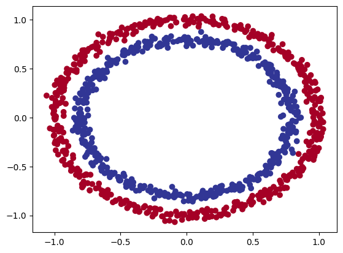
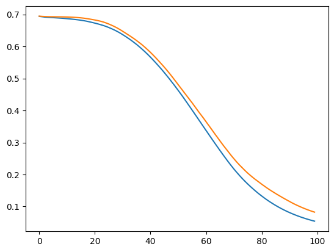

from sklearn.datasets import make_circles
import matplotlib.pyplot as plt
# Make 1000 samples
n_samples = 1000
# Create circles
X, y = make_circles(n_samples,
noise=0.03, # a little bit of noise to the dots
random_state=42) # keep random state so we get the same valuesnn classification
plt.scatter(x=X[:, 0],
y=X[:, 1],
c=y,
cmap=plt.cm.RdYlBu);
import torch
import torch.nn as nnX = torch.from_numpy(X).type(torch.float)
y = torch.from_numpy(y).type(torch.float)from sklearn.model_selection import train_test_split
X_train, X_test, y_train, y_test = train_test_split(X, y, test_size=0.2, random_state=42)X_train.shapetorch.Size([800, 2])class CircleClassifier(nn.Module):
def __init__(self):
super().__init__()
self.l1 = nn.Linear(2, 10)
self.l2 = nn.Linear(10, 1)
def forward(self, x):
return self.l2(self.l1(x))class CircleClassifierImproved(nn.Module):
def __init__(self):
super().__init__()
self.l1 = nn.Linear(2, 10)
self.l2 = nn.Linear(10, 10)
self.l3 = nn.Linear(10, 1)
self.relu = nn.ReLU()
def forward(self, x):
return self.l3(self.relu(self.l2(self.relu(self.l1(x)))))t = torch.from_numpy(X_train.numpy()).type(torch.float32)ttensor([[ 0.6579, -0.4651],
[ 0.6319, -0.7347],
[-1.0086, -0.1240],
...,
[ 0.0157, -1.0300],
[ 1.0110, 0.1680],
[ 0.5578, -0.5709]])Half is float16, Float is float32
f = nn.Linear(2, 10)(t)nn.Linear(2, 10)(t).shapetorch.Size([800, 10])# c = CircleClassifier()
c = CircleClassifierImproved()c.parameters<bound method Module.parameters of CircleClassifierImproved(
(l1): Linear(in_features=2, out_features=10, bias=True)
(l2): Linear(in_features=10, out_features=10, bias=True)
(l3): Linear(in_features=10, out_features=1, bias=True)
(relu): ReLU()
)>loss_fn = nn.BCEWithLogitsLoss()
opt = torch.optim.Adam(c.parameters(), lr=0.01)tr_loss = []
vl_loss = []# Calculate accuracy (a classification metric)
def accuracy_fn(y_true, y_pred):
correct = torch.eq(y_true, y_pred).sum().item() # torch.eq() calculates where two tensors are equal
acc = (correct / len(y_pred)) * 100
return acc# training loop
for epoch in range(100):
c.train()
y_pred = c(X_train).squeeze()
act_pred = torch.sigmoid(y_pred).round()
loss = loss_fn(y_pred, y_train)
tr_loss.append(loss.detach().numpy())
acc = accuracy_fn(y_train, act_pred)
opt.zero_grad()
loss.backward()
opt.step()
c.eval()
with torch.inference_mode():
v_pred = c(X_test).squeeze()
act_pred = torch.sigmoid(v_pred).round()
vloss = loss_fn(v_pred, y_test)
vl_loss.append(vloss.detach().numpy())
test_acc = accuracy_fn(y_test, act_pred)
print(f"Epoch: {epoch+1:>5} | Loss: {tr_loss[epoch]:.5f}, Accuracy: {acc:.2f}% | Test loss: {vl_loss[epoch]:.5f}, Test acc: {test_acc:.2f}%")Epoch: 1 | Loss: 0.69395, Accuracy: 49.25% | Test loss: 0.69459, Test acc: 48.00%
Epoch: 2 | Loss: 0.69282, Accuracy: 50.00% | Test loss: 0.69388, Test acc: 52.50%
Epoch: 3 | Loss: 0.69172, Accuracy: 51.38% | Test loss: 0.69347, Test acc: 53.50%
Epoch: 4 | Loss: 0.69103, Accuracy: 54.62% | Test loss: 0.69311, Test acc: 48.00%
Epoch: 5 | Loss: 0.69049, Accuracy: 52.25% | Test loss: 0.69285, Test acc: 48.50%
Epoch: 6 | Loss: 0.68994, Accuracy: 53.50% | Test loss: 0.69273, Test acc: 47.00%
Epoch: 7 | Loss: 0.68938, Accuracy: 53.12% | Test loss: 0.69262, Test acc: 47.50%
Epoch: 8 | Loss: 0.68879, Accuracy: 53.62% | Test loss: 0.69252, Test acc: 47.00%
Epoch: 9 | Loss: 0.68816, Accuracy: 53.50% | Test loss: 0.69239, Test acc: 47.50%
Epoch: 10 | Loss: 0.68747, Accuracy: 53.62% | Test loss: 0.69222, Test acc: 48.00%
Epoch: 11 | Loss: 0.68673, Accuracy: 53.75% | Test loss: 0.69196, Test acc: 47.50%
Epoch: 12 | Loss: 0.68592, Accuracy: 53.62% | Test loss: 0.69162, Test acc: 48.00%
Epoch: 13 | Loss: 0.68504, Accuracy: 53.12% | Test loss: 0.69120, Test acc: 48.00%
Epoch: 14 | Loss: 0.68407, Accuracy: 53.25% | Test loss: 0.69071, Test acc: 48.00%
Epoch: 15 | Loss: 0.68302, Accuracy: 53.37% | Test loss: 0.69010, Test acc: 48.00%
Epoch: 16 | Loss: 0.68186, Accuracy: 53.62% | Test loss: 0.68933, Test acc: 48.00%
Epoch: 17 | Loss: 0.68050, Accuracy: 53.75% | Test loss: 0.68833, Test acc: 47.50%
Epoch: 18 | Loss: 0.67886, Accuracy: 53.87% | Test loss: 0.68703, Test acc: 48.50%
Epoch: 19 | Loss: 0.67695, Accuracy: 53.75% | Test loss: 0.68569, Test acc: 48.50%
Epoch: 20 | Loss: 0.67495, Accuracy: 54.00% | Test loss: 0.68422, Test acc: 48.50%
Epoch: 21 | Loss: 0.67285, Accuracy: 54.00% | Test loss: 0.68263, Test acc: 49.50%
Epoch: 22 | Loss: 0.67058, Accuracy: 54.62% | Test loss: 0.68087, Test acc: 49.50%
Epoch: 23 | Loss: 0.66812, Accuracy: 54.87% | Test loss: 0.67885, Test acc: 49.50%
Epoch: 24 | Loss: 0.66548, Accuracy: 55.12% | Test loss: 0.67641, Test acc: 49.50%
Epoch: 25 | Loss: 0.66254, Accuracy: 55.38% | Test loss: 0.67345, Test acc: 50.50%
Epoch: 26 | Loss: 0.65915, Accuracy: 55.50% | Test loss: 0.67005, Test acc: 51.00%
Epoch: 27 | Loss: 0.65543, Accuracy: 56.38% | Test loss: 0.66632, Test acc: 54.00%
Epoch: 28 | Loss: 0.65144, Accuracy: 57.75% | Test loss: 0.66228, Test acc: 54.50%
Epoch: 29 | Loss: 0.64706, Accuracy: 62.12% | Test loss: 0.65776, Test acc: 64.00%
Epoch: 30 | Loss: 0.64221, Accuracy: 68.38% | Test loss: 0.65275, Test acc: 70.00%
Epoch: 31 | Loss: 0.63695, Accuracy: 72.62% | Test loss: 0.64736, Test acc: 73.00%
Epoch: 32 | Loss: 0.63136, Accuracy: 78.38% | Test loss: 0.64178, Test acc: 75.50%
Epoch: 33 | Loss: 0.62557, Accuracy: 82.50% | Test loss: 0.63626, Test acc: 81.50%
Epoch: 34 | Loss: 0.61948, Accuracy: 85.62% | Test loss: 0.63057, Test acc: 85.00%
Epoch: 35 | Loss: 0.61304, Accuracy: 88.12% | Test loss: 0.62463, Test acc: 85.50%
Epoch: 36 | Loss: 0.60619, Accuracy: 89.25% | Test loss: 0.61840, Test acc: 87.00%
Epoch: 37 | Loss: 0.59899, Accuracy: 91.00% | Test loss: 0.61182, Test acc: 87.00%
Epoch: 38 | Loss: 0.59143, Accuracy: 91.88% | Test loss: 0.60494, Test acc: 87.00%
Epoch: 39 | Loss: 0.58345, Accuracy: 92.50% | Test loss: 0.59751, Test acc: 87.50%
Epoch: 40 | Loss: 0.57512, Accuracy: 93.12% | Test loss: 0.58961, Test acc: 90.00%
Epoch: 41 | Loss: 0.56640, Accuracy: 93.50% | Test loss: 0.58136, Test acc: 90.50%
Epoch: 42 | Loss: 0.55733, Accuracy: 94.50% | Test loss: 0.57267, Test acc: 91.00%
Epoch: 43 | Loss: 0.54794, Accuracy: 95.88% | Test loss: 0.56366, Test acc: 92.50%
Epoch: 44 | Loss: 0.53824, Accuracy: 96.12% | Test loss: 0.55430, Test acc: 92.00%
Epoch: 45 | Loss: 0.52829, Accuracy: 96.25% | Test loss: 0.54468, Test acc: 91.50%
Epoch: 46 | Loss: 0.51800, Accuracy: 96.75% | Test loss: 0.53484, Test acc: 91.50%
Epoch: 47 | Loss: 0.50735, Accuracy: 97.00% | Test loss: 0.52465, Test acc: 93.50%
Epoch: 48 | Loss: 0.49646, Accuracy: 97.50% | Test loss: 0.51404, Test acc: 95.00%
Epoch: 49 | Loss: 0.48529, Accuracy: 97.88% | Test loss: 0.50296, Test acc: 95.50%
Epoch: 50 | Loss: 0.47391, Accuracy: 98.12% | Test loss: 0.49164, Test acc: 95.50%
Epoch: 51 | Loss: 0.46230, Accuracy: 98.00% | Test loss: 0.48024, Test acc: 95.50%
Epoch: 52 | Loss: 0.45044, Accuracy: 97.88% | Test loss: 0.46885, Test acc: 93.50%
Epoch: 53 | Loss: 0.43832, Accuracy: 98.00% | Test loss: 0.45750, Test acc: 93.50%
Epoch: 54 | Loss: 0.42590, Accuracy: 98.12% | Test loss: 0.44618, Test acc: 93.50%
Epoch: 55 | Loss: 0.41338, Accuracy: 98.12% | Test loss: 0.43490, Test acc: 94.00%
Epoch: 56 | Loss: 0.40085, Accuracy: 98.38% | Test loss: 0.42354, Test acc: 94.00%
Epoch: 57 | Loss: 0.38824, Accuracy: 98.62% | Test loss: 0.41168, Test acc: 93.50%
Epoch: 58 | Loss: 0.37554, Accuracy: 98.75% | Test loss: 0.39968, Test acc: 93.50%
Epoch: 59 | Loss: 0.36280, Accuracy: 98.75% | Test loss: 0.38801, Test acc: 94.50%
Epoch: 60 | Loss: 0.35000, Accuracy: 99.00% | Test loss: 0.37668, Test acc: 95.50%
Epoch: 61 | Loss: 0.33730, Accuracy: 99.12% | Test loss: 0.36468, Test acc: 94.50%
Epoch: 62 | Loss: 0.32471, Accuracy: 99.12% | Test loss: 0.35273, Test acc: 95.50%
Epoch: 63 | Loss: 0.31209, Accuracy: 99.25% | Test loss: 0.34076, Test acc: 96.00%
Epoch: 64 | Loss: 0.29957, Accuracy: 99.25% | Test loss: 0.32855, Test acc: 96.50%
Epoch: 65 | Loss: 0.28718, Accuracy: 99.38% | Test loss: 0.31671, Test acc: 97.50%
Epoch: 66 | Loss: 0.27486, Accuracy: 99.25% | Test loss: 0.30487, Test acc: 97.50%
Epoch: 67 | Loss: 0.26281, Accuracy: 99.38% | Test loss: 0.29303, Test acc: 98.50%
Epoch: 68 | Loss: 0.25092, Accuracy: 99.38% | Test loss: 0.28186, Test acc: 98.50%
Epoch: 69 | Loss: 0.23924, Accuracy: 99.88% | Test loss: 0.27086, Test acc: 98.00%
Epoch: 70 | Loss: 0.22795, Accuracy: 99.88% | Test loss: 0.25965, Test acc: 98.00%
Epoch: 71 | Loss: 0.21713, Accuracy: 99.75% | Test loss: 0.24917, Test acc: 98.50%
Epoch: 72 | Loss: 0.20682, Accuracy: 99.75% | Test loss: 0.23911, Test acc: 99.00%
Epoch: 73 | Loss: 0.19695, Accuracy: 99.75% | Test loss: 0.22970, Test acc: 99.00%
Epoch: 74 | Loss: 0.18754, Accuracy: 99.75% | Test loss: 0.22104, Test acc: 99.50%
Epoch: 75 | Loss: 0.17861, Accuracy: 99.75% | Test loss: 0.21228, Test acc: 99.50%
Epoch: 76 | Loss: 0.17008, Accuracy: 99.75% | Test loss: 0.20408, Test acc: 99.50%
Epoch: 77 | Loss: 0.16195, Accuracy: 99.75% | Test loss: 0.19655, Test acc: 99.50%
Epoch: 78 | Loss: 0.15414, Accuracy: 99.75% | Test loss: 0.18935, Test acc: 99.50%
Epoch: 79 | Loss: 0.14669, Accuracy: 99.75% | Test loss: 0.18272, Test acc: 99.50%
Epoch: 80 | Loss: 0.13957, Accuracy: 99.75% | Test loss: 0.17621, Test acc: 99.50%
Epoch: 81 | Loss: 0.13279, Accuracy: 99.75% | Test loss: 0.16968, Test acc: 99.50%
Epoch: 82 | Loss: 0.12630, Accuracy: 99.75% | Test loss: 0.16349, Test acc: 99.50%
Epoch: 83 | Loss: 0.12013, Accuracy: 99.75% | Test loss: 0.15734, Test acc: 99.50%
Epoch: 84 | Loss: 0.11429, Accuracy: 99.75% | Test loss: 0.15152, Test acc: 99.50%
Epoch: 85 | Loss: 0.10875, Accuracy: 99.88% | Test loss: 0.14605, Test acc: 99.50%
Epoch: 86 | Loss: 0.10347, Accuracy: 99.88% | Test loss: 0.14066, Test acc: 100.00%
Epoch: 87 | Loss: 0.09847, Accuracy: 99.88% | Test loss: 0.13540, Test acc: 100.00%
Epoch: 88 | Loss: 0.09374, Accuracy: 99.88% | Test loss: 0.13038, Test acc: 100.00%
Epoch: 89 | Loss: 0.08927, Accuracy: 99.88% | Test loss: 0.12535, Test acc: 100.00%
Epoch: 90 | Loss: 0.08506, Accuracy: 99.88% | Test loss: 0.12052, Test acc: 100.00%
Epoch: 91 | Loss: 0.08111, Accuracy: 99.88% | Test loss: 0.11580, Test acc: 99.50%
Epoch: 92 | Loss: 0.07738, Accuracy: 100.00% | Test loss: 0.11105, Test acc: 99.50%
Epoch: 93 | Loss: 0.07385, Accuracy: 100.00% | Test loss: 0.10668, Test acc: 99.50%
Epoch: 94 | Loss: 0.07050, Accuracy: 100.00% | Test loss: 0.10263, Test acc: 99.50%
Epoch: 95 | Loss: 0.06736, Accuracy: 100.00% | Test loss: 0.09872, Test acc: 99.50%
Epoch: 96 | Loss: 0.06441, Accuracy: 100.00% | Test loss: 0.09504, Test acc: 99.50%
Epoch: 97 | Loss: 0.06163, Accuracy: 100.00% | Test loss: 0.09157, Test acc: 99.50%
Epoch: 98 | Loss: 0.05901, Accuracy: 100.00% | Test loss: 0.08830, Test acc: 99.50%
Epoch: 99 | Loss: 0.05656, Accuracy: 100.00% | Test loss: 0.08528, Test acc: 100.00%
Epoch: 100 | Loss: 0.05425, Accuracy: 100.00% | Test loss: 0.08247, Test acc: 100.00%plt.plot(tr_loss)
plt.plot(vl_loss);